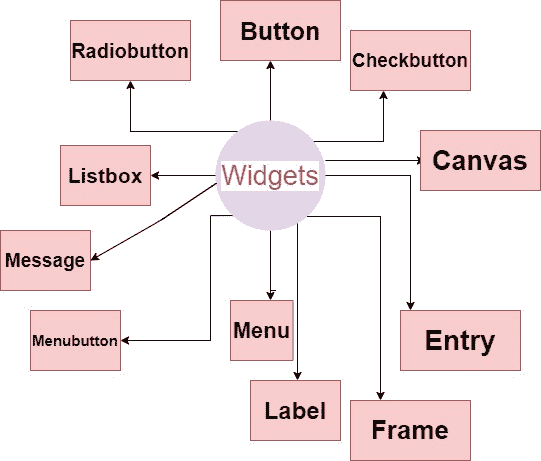

Tkinter 小部件
在本教程中，我们将概述 Python 中的 Tkinter 小部件。这些小部件是任何 Tkinter GUI 应用上的功能单元。
Tkinter widgets
有各种控件，如图形用户界面应用中使用的按钮、标签、滚动条、单选按钮和文本框。这些小组件或图形用户界面(GUI) 的控件在 Tkinter 中被称为小部件。

这些是 Tkinter 模块中提供的 19 小部件。下面我们列出了所有的小部件和基本描述:
| 小部件名称 | 描述 |
|---|---|
| 按钮 | 如果您想在应用中添加一个按钮，那么将使用按钮部件。 |
| 帆布 | 绘制复杂的布局和图片(如图形、文本等。)将使用画布小部件。 |
| 检查按钮 | 如果你想显示一些选项作为复选框，那么使用检查按钮部件。它允许您一次选择多个选项。 |
| 条目 | 显示从用户输入部件接受值的单行文本字段将被使用。 |
| 框架 | 为了分组和组织另一个小部件，将使用框架小部件。基本上，它充当了一个容纳其他小部件的容器。 |
| 标签 | 要为另一个小部件提供单行标题，将使用标签小部件。它也可以包含图像。 |
| 列表框 | 要向用户提供选项列表，将使用列表框小部件。 |
| 菜单 | 将使用向用户提供命令的菜单部件。基本上这些命令在菜单按钮中。这个小部件主要创建应用中需要的各种菜单。 |
| 菜单按钮 | 菜单按钮部件用于向用户显示菜单项。 |
| 消息 | 消息小部件主要向用户显示一个消息框。基本上是不可编辑的多行文本。 |
| 单选按钮 | 如果您希望选项的数量显示为单选按钮，那么将使用单选按钮部件。您可以一次选择一个。 |
| 刻度 | 刻度小部件主要是一个图形滑块，允许你从刻度中选择数值。 |
| 滚动条 | 要上下滚动窗口，将使用 python 中的滚动条小部件。 |
| 文字 | 文本小部件主要为用户提供一个多行文本字段，用户可以在其中输入或编辑文本，与 Entry 不同。 |
| 上一层 | 顶层小部件主要是给我们提供一个单独的窗口容器 |
| 旋转盒 | 旋转框作为“输入小部件的入口，在该小部件中，只要选择一个固定数值就可以输入数值。 |
| 平板式窗口 | 窗格也是容器小部件，主要用于处理不同的窗格。放置在其内部的窗格可以水平或垂直 |
| 标签框架 | LabelFrame 小部件也是一个容器小部件，主要用来处理复杂的小部件。 |
| 消息框 | 消息框 小部件主要用于在桌面应用中显示消息。 |
使用上面提到的所有小部件，我们可以创建令人惊叹的图形用户界面应用。
总结:
因此，在本教程中，我们获得了对小饰品的基本介绍。在接下来的教程页面中，我们将详细介绍每个小部件及其各自的代码示例。